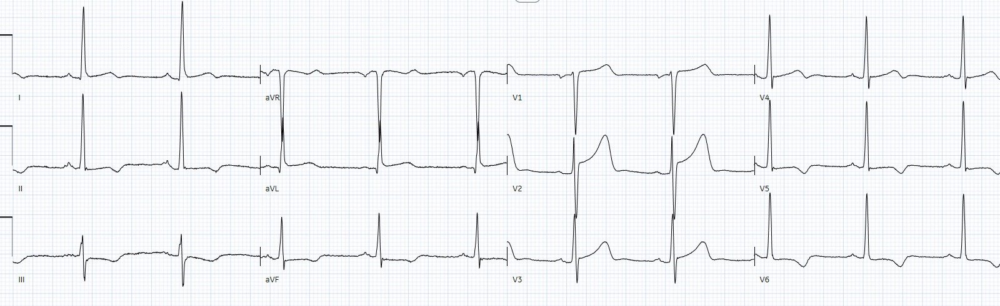
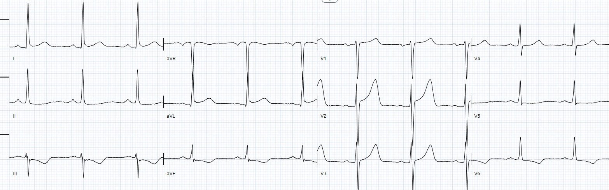
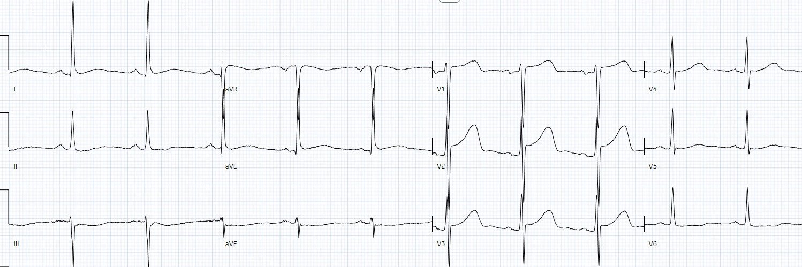
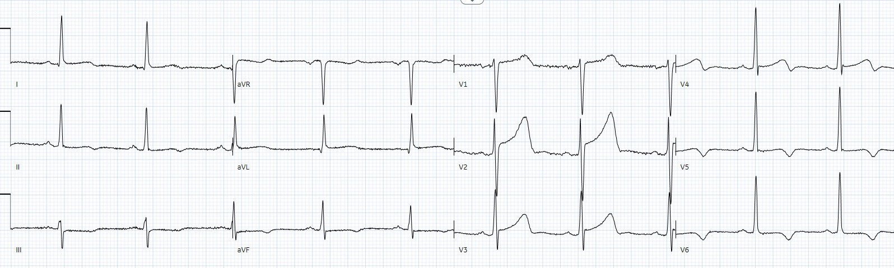
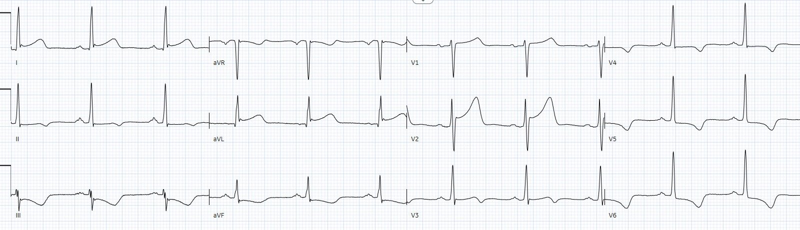
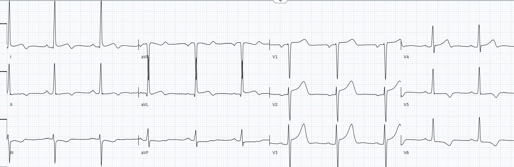
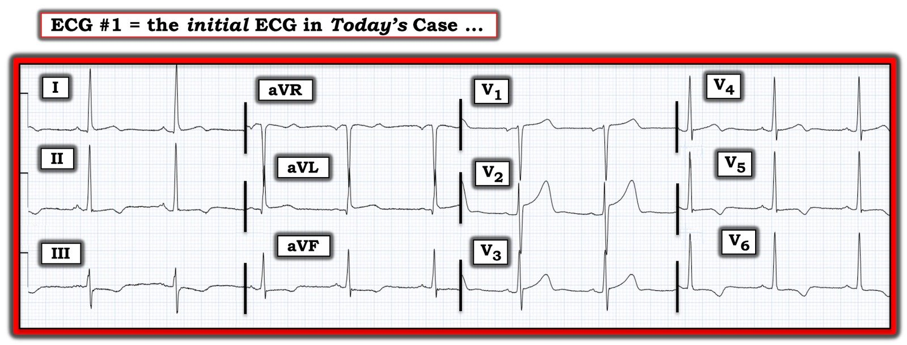

20/06/2022 — LVH và ST chênh lên thành trước: đây có phải OMI và bạn có kích hoạt phòng thông tim không?
Bản dịch tiếng Việt của bài "LVH and Anterior ST Elevation: is it OMI and would you activate the cath lab?" – Dr. Smith’s ECG Blog. Giữ nguyên toàn bộ 8 hình ảnh của bản gốc.
Tác giả: Jesse McLaren (@ECGCases), kèm bình luận của Smith và Grauer
Một bệnh nhân 50 tuổi đến viện vì đau ngực lan lên
vai. Bệnh nhân có tiền sử đặt stent LAD cách đây 10 năm và rối loạn sử dụng rượu,
đã nhiều lần đến viện vì đau ngực và hai lần báo động STEMI (code STEMI) cách đây hai năm
nhưng chụp mạch không phát hiện bệnh mạch vành tắc nghẽn.
Bạn nghĩ sao?


Nhịp xoang bình thường, các khoảng bình thường, trục bình thường,
và tăng tiến sóng R bình thường. Có LVH kèm bất thường tái cực,
bao gồm ST chênh xuống và sóng T đảo ngược ngược hướng (discordant) ở thành dưới-bên, cùng
ST chênh lên ngược hướng và sóng T cao ở V2.
Có thay đổi thiếu máu cục bộ nguyên phát nào không? Làm thế nào để nhận ra
OMI khi có LVH?
1. Các điện tâm đồ cũ
Dưới đây là
điện tâm đồ đầu tiên và cuối cùng của lần khám dẫn đến báo động STEMI, khi đó chụp mạch phát hiện
stent LAD còn thông nhưng không có bệnh mạch vành tắc nghẽn (theo tóm tắt ra viện, không có thêm chi tiết chụp mạch vành):




Điều này cho thấy lợi ích và hạn chế của điện tâm đồ cũ. Một
mặt, chúng ta thấy được các bất thường tái cực thứ phát từ trước. Nhưng chúng ta
cũng thấy chúng dao động theo thời gian, và có thể thay đổi do khác biệt trong vị trí đặt
điện cực.
2. Tính tương xứng (proportionality)
Các thay đổi ST/T thứ phát do LVH có thể gây khó khăn cho việc
đánh giá các bất thường thiếu máu cục bộ nguyên phát, và mô hình STEMI thậm chí không hề
thử — vì nó định nghĩa STEMI là ST chênh lên khi không có LVH. Nhưng mô hình OMI
có thể dựa vào nguyên tắc tương xứng. Như các bác sĩ Aslanger, Meyers và
Smith giải thích trong bài Recognizing
electrocardiographically subtle occlusion myocardial infarction and
differentiating it from mimics: ten steps to or away from the cath lab (Nhận diện nhồi máu cơ tim do tắc tinh tế trên điện tâm đồ và phân biệt với các hình ảnh giả: mười bước đến hoặc rời xa phòng thông tim): “Nếu có điện thế cao cho thấy
phì đại thất trái (LVH), có thể thấy một mức STE nào đó ở các chuyển đạo có sóng S
sâu (thường là V1-V3) và có thể giả STEMI. Nếu biên độ STE lớn hơn
một phần sáu biên độ sóng S ở một trong các chuyển đạo này, thì rất
nghi ngờ OMI.”
Bệnh nhân này có tỷ lệ ST/T nền ở V2 >15% nhưng
tỷ lệ này còn lớn hơn trên điện tâm đồ mới. Cả điện tâm đồ thứ hai của lần khám trước và điện tâm đồ
mới đều có ST chênh lên 3mm ở V3, nhưng sóng S đã giảm từ 14mm xuống
11mm, làm tỷ lệ ST/T tăng từ 21% lên 27%.
Bài viết rất quan trọng để hiểu ST chênh lên thành trước khi có LVH:
LVH with anterior ST Elevation. When is it anterior STEMI? (LVH kèm ST chênh lên thành trước. Khi nào là STEMI thành trước?)
3. Bệnh nhân
Với việc bệnh nhân nhiều lần đến viện vì đau ngực, các lần chụp mạch vành trước đó ổn định và các thay đổi tái cực trên điện tâm đồ, rất dễ gạt bỏ ca này. Nhưng bác sĩ tim mạch lo ngại về cách bệnh nhân
mô tả cơn đau, nặng hơn các đợt trước, lại ở một bệnh nhân có bệnh động mạch vành từ trước, nên đã kích hoạt phòng thông tim (cath lab). Stent LAD còn thông
nhưng có một mảng xơ vữa loét gây hẹp 90% ở nhánh sau bên phải (right posterolateral), và tổn thương này
đã được đặt stent. Ngoài ra còn có tổn thương hẹp 30% ở RCA đoạn gần và 50% ở động mạch mũ đoạn gần.
Vì có kích hoạt phòng thông tim và tổn thương thủ phạm
phải đặt stent, bệnh nhân được chẩn đoán là “STEMI”. Nhưng troponin chưa bao giờ
tăng, và troponin ban đầu và sau thông tim là như nhau: 14ng/L
trước (bình thường <26 ở nam và <16 ở nữ) và 13 sau. Vậy đây có phải là đau thắt ngực không ổn định?
Smith: Tôi nghĩ thậm chí không thể đưa ra kết luận này. Có thể là hoặc không phải đau thắt ngực không ổn định, nhiều khả năng là không, và với điện tâm đồ dao động.
Đây là điện tâm đồ sau thông tim:


ST chênh lên ở V2 vẫn như cũ và sóng S tương tự, nhưng
giờ sóng T có vẻ còn lớn hơn. Đây có phải là sóng T tái tưới máu thành sau không, xét theo
vị trí của tổn thương thủ phạm? Nhưng lẽ ra phải có ít nhất một mức tăng rất nhỏ của
troponin do tổn thương tái tưới máu.
Vài ngày sau bệnh nhân lại đến viện vì đau
ngực, và đội cấp cứu ngoài viện (EMS) lại đưa vào dưới dạng báo động STEMI dựa trên ST chênh lên thành trước và ST chênh xuống thành dưới. Lần này bệnh nhân từ chối thông tim và troponin các lần liên tiếp vẫn ở mức 13. Kết quả siêu âm tim: “thất trái kích thước bình thường, tái cấu trúc đồng tâm và phân suất tống máu tâm thu thất trái nhìn chung bình thường. Ghi nhận rối loạn vận động thành nhẹ ở phân đoạn vách trước, phân đoạn giữa vách và phân đoạn giữa thành dưới. Thất phải bình thường về kích thước và chức năng, không có bệnh lý van tim đáng kể.” Bệnh nhân được chẩn đoán đau ngực
không do tim. Dưới đây là điện tâm đồ lúc đầu và lúc ra viện:




Một lần nữa chúng ta thấy một số biến đổi của các bất thường
tái cực, bị khuếch đại bởi vị trí đặt điện cực (tỷ lệ R/S khác nhau ở V2-4 và V1-2 bị
đặt quá cao ở bản ghi thứ hai — với sóng P âm hoàn toàn ở V1 và sóng P hai pha ở V2).
Điều cần nhớ
1.
Vấn đề: LVH tạo ra các bất thường tái cực
thứ phát có thể gây khó khăn cho việc nhận ra các thay đổi thiếu máu cục bộ nguyên phát,
và tiêu chuẩn STEMI không giúp được gì
2.
Điện tâm đồ cũ có thể cho thấy các thay đổi tái cực nền, nhưng những thay đổi này
có thể dao động theo thời gian và theo khác biệt về vị trí đặt điện cực và tư thế bệnh nhân
3.
Tính tương xứng: ST chênh lên không tương xứng
có thể giúp nhận ra OMI — với ST/S>15% là đáng lo ngại — nhưng vẫn có thể có dương tính
giả
4.
Bệnh nhân: những bệnh nhân có xác suất tiền nghiệm cao và
triệu chứng thiếu máu cục bộ đáng được thăm dò ngay cả khi các lần chụp mạch vành trước đó
không có gì đáng kể hoặc điện tâm đồ không đặc hiệu
5.
Mô hình: báo động STEMI dẫn đến đặt stent không
có nghĩa là bệnh nhân đã bị “STEMI”. Hội chứng vành cấp (ACS) không nên được phân loại theo việc điện tâm đồ
lúc vào viện có ST chênh lên hay không, mà theo việc bệnh nhân bị nhồi máu cơ tim do tắc
(OMI) hay nhồi máu cơ tim không do tắc (NOMI) — hoặc đau thắt ngực không ổn định.
Smith: Làm thế nào để khi nhìn lại, chúng ta kết luận được đây có phải là OMI hay không?
1. Bất kỳ điện tâm đồ nào biểu hiện thiếu máu cục bộ đều phải có diễn tiến. Hình ảnh LVH dao động này có lẽ không thỏa tiêu chí đó.
2. Phải có ít nhất một mức tăng và/hoặc giảm troponin nào đó, ngay cả khi không đạt tới bách phân vị thứ 99. Hơn nữa, rất hiếm khi đây là OMI mà không có ít nhất một giá trị troponin vượt bách phân vị thứ 99. Định nghĩa nghiên cứu của chúng tôi về OMI đòi hỏi hoặc a) giảm dòng chảy trong động mạch (TIMI 0-2) hoặc b) có tổn thương thủ phạm kèm troponin rất cao. Có thể có OMI không đáp ứng các tiêu chí này (nhưng vẫn biểu hiện trên điện tâm đồ và có diễn tiến) do a) tắc quá ngắn, hoặc b) không xác định được tổn thương thủ phạm, nhưng phải có MỘT mức tăng và/hoặc giảm troponin nào đó, ngay cả khi đó là đau thắt ngực không ổn định với mọi giá trị đều dưới bách phân vị thứ 99. Định nghĩa nhồi máu cơ tim cấp bao gồm troponin tăng và/hoặc giảm với ít nhất một giá trị vượt bách phân vị thứ 99 của xét nghiệm đó.
Vì vậy, bệnh nhân này có ST chênh lên không do thiếu máu cục bộ và một chỗ hẹp mạn tính, ổn định đã được can thiệp. Có một số dao động không do thiếu máu cục bộ trên điện tâm đồ.
Bệnh nhân này nên mang theo bên mình một bản sao điện tâm đồ của họ!

===================================
Bình luận của KEN GRAUER, MD (20/6/2022):
===================================
Bài bàn luận xuất sắc của bác sĩ McLaren về một chủ đề khó: đánh giá và xử trí bệnh nhân có tiền sử bệnh mạch vành — nhưng đồng thời cũng có tiền sử nhiều lần đến khoa cấp cứu vì đau ngực, dẫn đến các lần thông tim trước đây đều không cho thấy bệnh mạch vành tắc nghẽn. Những đặc điểm khác của ca hôm nay làm việc đánh giá thêm phức tạp bao gồm:
- Tiền sử “rối loạn sử dụng rượu”. Dù điều này chắc chắn không loại trừ khả năng có bệnh tim cấp mới — theo kinh nghiệm của tôi, nó luôn khiến tôi khó đánh giá những bệnh nhân như vậy hơn.
- Một loạt điện tâm đồ cũ của bệnh nhân cho thấy các bất thường sóng ST-T dao động. Tuy vậy — khác biệt về vị trí đặt điện cực khiến việc đánh giá những dao động này khó khăn hơn.
- Một số dấu hiệu bất thường trên điện tâm đồ ban đầu (bao gồm LVH) — khiến tôi không chắc chắn nên xử trí tiếp như thế nào.
Tôi thấy điện tâm đồ ban đầu trong ca hôm nay đáng được bình luận thêm. Để rõ ràng — tôi đã đưa lại bản ghi ban đầu này trong Hình 1.
- Điện tâm đồ #1 cho thấy nhịp xoang bình thường với tần số vừa trên 60/phút. Khoảng PR bình thường, QRS hẹp — nhưng QTc kéo dài (tôi ước tính ~480 msec.). Trục mặt phẳng trán bình thường, ở +20 độ.
Như bác sĩ McLaren đã nêu ở trên — có LVH trên điện tâm đồ ban đầu này. Tuy vậy — có một số đặc điểm không điển hình trong chẩn đoán điện tâm đồ này:
- Trước đây tôi đã trình bày “Quan điểm của tôi” về một cách tiếp cận dễ áp dụng để chẩn đoán LVH trên điện tâm đồ (Xem bình luận của tôi trong các bài ngày 20 tháng Sáu năm 2020 và ngày 27 tháng Tư năm 2019 trên Dr. Smith’s ECG Blog). Tiêu chuẩn điện thế chưa hẳn đạt ở các chuyển đạo ngực trong Hình 1. Tiêu chuẩn có đạt ở chuyển đạo aVL (R ≥12 mm ở aVL) — và sóng R rất cao ở chuyển đạo I có lẽ cũng đủ tiêu chuẩn.
- Như tôi đã nhấn mạnh trong các bài trước — việc y văn có hơn 50 tiêu chuẩn chẩn đoán LVH trên điện tâm đồ có nghĩa là không tiêu chuẩn nào trong số đó là tối ưu. Điều đó cũng có nghĩa là điện tâm đồ còn xa mới là một công cụ đánh giá LVH hoàn hảo. Về mặt thực hành — khi biên độ QRS có vẻ tăng và có các thay đổi sóng ST-T phù hợp với “tăng gánh” thất trái — khả năng có LVH “thật” là cao nếu bệnh nhân là người trưởng thành ở một độ tuổi nhất định và có tiền sử bệnh tim. Vì vậy tôi cho rằng chẩn đoán LVH là chắc chắn.
Dấu hiệu điện tâm đồ nổi bật nhất mà tôi thấy trong Hình 1 — là ST chênh lên tại điểm J 2+ mm ở chuyển đạo V2, đi kèm một sóng T cao không tương xứng với đáy rộng. Tuy vậy — tôi không tin rằng đoạn ST lõm lên trên (dạng “mặt cười”) với điểm J tạo góc trong điện tâm đồ #1 là cấp tính. Dù hình dạng tổng thể của sóng ST-T này ở chuyển đạo V2 trông phù hợp nhất với kiểu ST chênh lên thấy ở các chuyển đạo trước tim khi có LVH (ngày 20 tháng Sáu năm 2020) — sóng S ở chuyển đạo V2 lại không sâu được như mức tôi kỳ vọng nếu sóng ST-T ở chuyển đạo V2 chỉ đơn thuần là hậu quả của LVH.
- Có ST chênh lên kín đáo ở các chuyển đạo bên cao I và aVL của điện tâm đồ #1 — kèm hình ảnh có vẻ là ST chênh xuống ngược chiều dạng soi gương ở các chuyển đạo dưới. Liệu đây có thể là cấp tính? (nhất là khi hoàn toàn không thấy ST-T chênh xuống của “tăng gánh” thất trái ở các chuyển đạo bên cao này?).
- Có sóng T đảo ngược khá sâu và đối xứng ở các chuyển đạo ngực bên V5,V6 (kèm phần cuối sóng T âm ở chuyển đạo V4). Điều này phù hợp với thiếu máu cục bộ? với “tăng gánh” thất trái? — hay — với sự kết hợp của cả hai?
- Nhận định của tôi về điện tâm đồ #1: Từ việc đánh giá điện tâm đồ ban đầu này, tôi hoàn toàn không chắc mình sẽ trả lời thế nào câu hỏi của bác sĩ McLaren về việc có kích hoạt phòng thông tim hay không. “Linh cảm” của tôi — là OMI cấp ít có khả năng hơn — nhưng tôi cảm thấy cần thêm thông tin (tức là mức độ lo ngại từ bệnh sử và triệu chứng của bệnh nhân, so sánh với các bản ghi khác, troponin, v.v.) để đưa ra quyết định.
- Việc xem lại 2 bản ghi cũ từ lần báo động STEMI trước của bệnh nhân không giải tỏa được sự không chắc chắn của tôi. Dù các thay đổi sóng ST-T có vẻ rõ hơn một chút trên điện tâm đồ #1 so với các bản ghi cũ — tôi không nghĩ chúng đưa ra được câu trả lời dứt khoát.


ĐIỀU CỐT LÕI trong ca hôm nay:
Như bác sĩ McLaren đã nhấn mạnh — Những bệnh nhân có xác suất tiền nghiệm cao và triệu chứng thiếu máu cục bộ đôi khi đáng được thăm dò, ngay cả khi các lần thông tim trước đó không có gì đáng kể và/hoặc điện tâm đồ không đặc hiệu. Đó chính là trường hợp của bệnh nhân hôm nay.
- Đáng tiếc — việc đánh giá bệnh nhân này trong tương lai có thể vẫn còn khó khăn nếu anh ấy lại quay lại vì đau ngực, nhưng không có thay đổi điện tâm đồ dứt khoát hay tăng troponin.
- T.B. (P.S.): Một điểm rất quan trọng được nêu bật trong bình luận cuối cùng của bác sĩ Smith = Chỉ vì có một chỗ hẹp mức độ cao (tức là hẹp 90% trong ca hôm nay) — không nhất thiết có nghĩa đó là tổn thương “thủ phạm” gây ra triệu chứng.